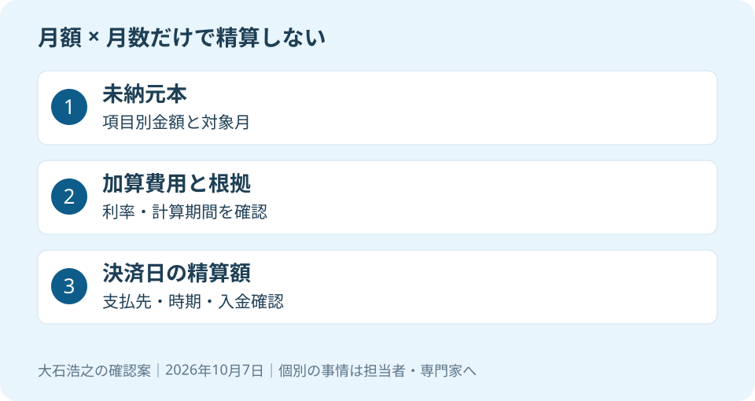

大石浩之（磐田市／不動産業）です。親のマンションを売り、代金から管理費の未納分を払いたい。その考え方を検討する前に、請求額の中身を確かめます。月々の管理費に滞納月数を掛けた額だけでは、精算に必要なお金が足りない場合があります。
滞納管理費は、売却しただけでは消えない
国土交通省の令和7年改正マンション標準管理規約では、第25条に管理費と修繕積立金の納入を定めています。第26条は、管理費等の債権を特定承継人に対しても行使できる内容です。特定承継人とは、売買などでその部屋の所有権を取得した人を指します。
意外に思われる点ですが、滞納は以前の持ち主だけの事情として終わるとは限りません。買主にも請求が及び得るため、売却の説明から外せない項目です。ただし、個別の請求の可否や範囲は、実際の規約と債権の内容を専門家へ確認します。
国土交通省は2025年10月17日、2026年4月施行の改正区分所有法に合わせた標準管理規約の改正を発表しました。標準管理規約は各マンションが規約を作成・改正する際のひな型です。そのまま全物件に適用される規約でも、各部屋の残高証明でもありません。
この記事は2026年10月7日に同省の発表と単棟型の規約本文を確認しました。滞納債権を買主へ請求できる扱いが2026年に初めてできた、とは説明しません。制度の改正時期と、以前から確認すべき滞納問題を混ぜないためです。
確認1：元本と加算費用を分けて聞く
滞納額の照会では、未納の管理費・修繕積立金と、それ以外の請求を分けます。標準管理規約第60条第2項には、遅延損害金、違約金としての弁護士費用等、督促・徴収費用を加算して請求できる旨があります。何が実際に請求されているかは、管理組合へ確認します。
遅延損害金は、支払いが遅れたことに対する費用です。ひな型の年率は空欄で、全国一律の数字はありません。私は、管理会社の電話回答だけで手取り表を完成させず、適用する規約の条文、利率、計算期間、計算方法を資料で残すよう案内します。
| 照会する欄 | 確認する内容 |
|---|---|
| 未納元本 | 管理費・修繕積立金などの項目別金額と対象月 |
| 加算費用 | 遅延損害金、弁護士費用等、督促・徴収費用の内訳と根拠 |
| 支払済みの反映 | 入金日、充当先、残高に反映した基準日 |
例えば、管理費月1万円と修繕積立金月1万5,000円が12か月未納と仮定します。元本は2万5,000円×12か月で30万円です。これは説明用の仮定で、磐田の相場ではありません。この30万円に加算費用があるかを確かめて、ようやく精算額の入口に立てます。
私は数字を、家族が売却後に使えるお金へ戻して考えます。30万円を見落とせば、引っ越しや施設費のために残す予定だった30万円が減ります。売却価格より手取りで考える記事と合わせ、未納分を独立した支出欄に入れてください。

確認2：規約と残高の基準日をそろえる
管理費滞納の精算に使う資料は、現在そのマンションで使われている規約と、日付の分かる残高回答です。標準管理規約を読んだだけで、自宅の遅延損害金や徴収費用まで決まるわけではありません。管理組合へ、管理会社が窓口ならその担当を通じて照会します。
私は、規約の版と改正日、管理費等の月額、未納の対象月、残高の基準日を一組で確認します。相続した部屋なら、親の手元にあった古い案内が現在も有効かを聞きます。口座から引かれていないという事実だけで、全項目が未納とも断定しません。
売却の相談日と決済日は違います。相談時に確認した残高が、そのまま決済日の金額になるとは限りません。追加の月額負担や遅延損害金がどう扱われるか、いつ再計算した数字をもらうかも決めておきます。
管理会社から資料を取得できる良さは、家族の記憶ではなく、管理の記録で比較できることです。私は、売主と買主が同じ内訳を見ることで、費用の話を進めやすくなると考えます。確認した日付を記しておけば、数字が変わった理由も追えます。
その上で注文したいのは、合計額だけの回答で終えないことです。加算費用の根拠が分からないまま「全部払えばよい」と案内することには、私も迷いがあります。争いがある請求は、仲介会社が正否を断定せず、弁護士などの専門家に確認を。
管理の資料は、作成者と説明者の役割も確認します。マンション修繕と利益相反の確認で扱ったように、誰の立場の説明かを意識すると、追加で確かめる相手を選びやすくなります。
確認3：決済日に、誰へどう払うかを決める
売却代金から滞納分を支払う計画は、金額だけでなく支払先と時期まで組んで確認します。決済とは、残りの売買代金の支払いと物件の引渡しなどを行う場面です。私は、当日に入るお金から何を先に支払うかを、売主側の表に落とします。
管理費等の精算に回す額を、住宅ローンの返済、仲介手数料、登記などの費用と並べます。売買代金の総額をそのまま手元資金とは数えません。相続人の間で代金を分ける予定がある場合も、先に支払う費用を除いた見通しを専門家と確認します。
仮に、ほかの支払いを除いて残る予定額が80万円なら、未納元本30万円を引くと50万円です。加算費用があればさらに減ります。いずれも説明用の数字です。残る額が足りない場合に、売れば自動的に完済できると約束してはいけません。
振込先、振込の担当、金額の再確認日、入金後に何を受け取るかを決めます。売主と買主の間で費用負担を決めても、それだけで管理組合に対する請求が消えるとは限りません。実際に支払った結果を確認するところまでが、私の提案する段取りです。
決済当日のお金の流れを使い、滞納分の行を追加すると整理できます。どの項目を売主が負担するか、契約や重要事項でどう説明するかは、仲介担当者と関係する専門家へ事前に確認してください。
磐田・袋井で、手取り表を一度作り直す
磐田市・袋井市のマンションを売却する家族は、管理組合へ未納額の内訳と基準日を問い合わせることから始めてください。実際の請求書や規約がない段階では、その部屋の精算額は分かりません。価格交渉より先に、支出の未確認欄を減らします。
私はこう考えます。家族で売却後の資金を相談する場面なら、紙に大きく売買代金を書くだけでは終えません。その下に、ローン、売却費用、管理費等の未納、残るお金の欄を作ります。管理組合の回答前は未納欄をゼロにせず「照会中」と書きます。これは実際の相談の再現ではなく、私の提案です。分からない支出をゼロ扱いしないだけで、使えるお金の約束を控えられます。
納めた修繕積立金を返してもらい、滞納分に回す計画にも注意が必要です。標準管理規約第60条第7項は、納入した管理費等の返還や分割請求を認めない内容です。自分名義の貯金のように引き出せる前提で、資金計画を立てないでください。
介護施設の運営から不動産事業を始めた富士ヶ丘サービスのような窓口には、住み替えや介護と不動産を一体で相談する方法があります。家族が困らない売却のため、私は磐田・袋井で価格と支出の両方を整理します。請求、契約、税務、登記、相続の個別判断は専門家に確認を。